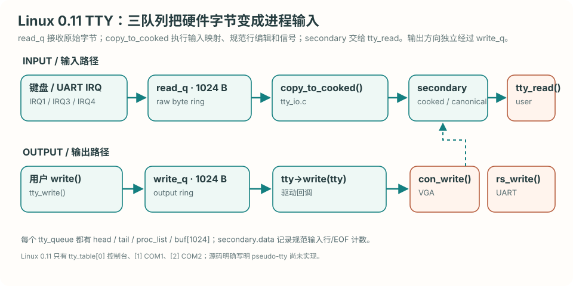
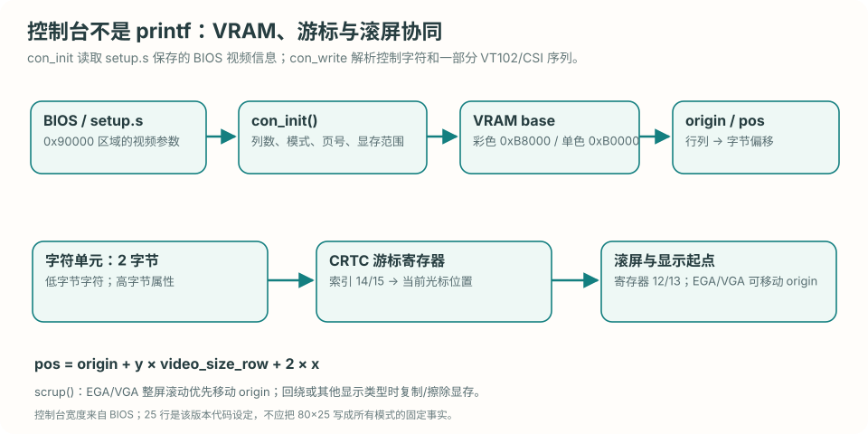

TTY 三队列与 VGA 控制台：字符如何进出内核
从 tty_struct、1024 字节循环队列和 copy_to_cooked 出发，追踪规范输入、行编辑、终端读写、VGA 显存与 CRTC 游标。限定 Linux 0.11 的三路 TTY 实现。
TTY · 1024B queues · VGATTY 是字符设备的一条处理流水线
按下键盘上的 A，CPU 先收到键盘控制器中断；串口输入则从 UART 的接收寄存器到达。两条硬件路径都不会直接把字节复制进某个应用程序的缓冲区。它们先把原始字符写入 TTY 的输入队列，再由公共代码做回车换行转换、规范行编辑、信号识别和回显；应用程序随后通过 read() 取出已经整理好的字节。
输出方向反过来：进程的 write() 进入 tty_write()，终端输出规则可能把一个换行扩展成 CR/LF，然后写入输出队列。最后由具体设备回调把字符送进 VGA 显存或 UART 发送寄存器。TTY 因而是“设备驱动 + 终端语义 + 用户进程接口”的组合，而不只是屏幕驱动。

tty_struct 与 tty_queue 的真实字段
include/linux/tty.h 定义 TTY_BUF_SIZE=1024。每个 tty_queue 包含 data、head、tail、等待队列指针 proc_list 和 buf[1024]；tty_struct 则包含终端属性 termios、前台进程组 pgrp、停止标记、输出回调 write，以及三个队列对象：read_q、write_q、secondary。
#define TTY_BUF_SIZE 1024
struct tty_queue {
unsigned long data, head, tail;
struct task_struct * proc_list;
char buf[TTY_BUF_SIZE];
};
struct tty_struct {
struct termios termios;
int pgrp;
int stopped;
void (*write)(struct tty_struct * tty);
struct tty_queue read_q, write_q, secondary;
};三个队列不是三个指针，而是直接嵌入 tty_struct 的结构体成员。队列宏用 &(TTY_BUF_SIZE-1) 做循环回绕，所以容量必须是 2 的幂；head==tail 表示空，写入时要留一个空槽区分满与空，最大有效字符数为 1023，而不是 1024。
还要留意 data 字段并不总是“当前字符数”：串口的 read_q.data/write_q.data 被复用来保存端口基址 0x3f8 或 0x2f8；控制台的 secondary.data 则记录完整行/EOF 标记的计数。
一个 1024 字节 TTY 队列能存 1024 个字符吗？（展开核对）
不能。head 与 tail 相等代表空，因此环形队列必须空出一个槽来区分满与空，最大有效容量为 1023 字节。
Linux 0.11 只有三个 tty_table 项
kernel/chr_drv/tty_io.c 中的 tty_table[] 只初始化三个终端：索引 0 是控制台，索引 1 是第一串口，索引 2 是第二串口。控制台的 write 回调是 con_write；两个串口使用 rs_write。两个串口的默认控制模式是 B2400 | CS8，即 2400 baud、8 位字符。
table_list[] 给汇编中断处理器提供六个队列地址：console read/write、serial1 read/write、serial2 read/write。源码注释直接写明“可以通过改这张表实现 pseudo-tty，但目前尚未实现”。因此本版本没有现代 PTY master/slave 设备，不能把后来的 /dev/pts、Unix98 PTY 或可插拔 tty_ldisc 结构移植进来。
struct tty_queue * table_list[] = {
&tty_table[0].read_q, &tty_table[0].write_q,
&tty_table[1].read_q, &tty_table[1].write_q,
&tty_table[2].read_q, &tty_table[2].write_q
};
/* tty_init(): rs_init(); con_init(); */copy_to_cooked：从原始字节到规范输入
copy_to_cooked(tty) 在 read_q 非空且 secondary 未满时取出一个字节。它先按 termios.c_iflag 处理 CR/LF：ICRNL 将回车转成换行，IGNCR 忽略回车，INLCR 将换行转成回车；I_UCLC 可做小写转换。然后才进入规范模式逻辑。
在默认控制台 ICANON 已开启。VERASE 删除当前行末字符，VKILL 删除当前输入行，VSTOP/VSTART 设置或解除 tty->stopped；若 ISIG 开启，VINTR 和 VQUIT 会向终端前台进程组投递信号，而不是作为普通字符进入应用缓冲区。每个换行或 EOF 标记会增加 secondary.data，表示有一个可读的规范输入单位。
while (!EMPTY(tty->read_q) && !FULL(tty->secondary)) {
GETCH(tty->read_q,c);
/* CR/LF 映射、大小写映射 */
if (L_CANON(tty)) {
if (c == KILL_CHAR(tty)) { /* 删除本行 */ }
if (c == ERASE_CHAR(tty)) { /* 删除一字节 */ }
if (c == STOP_CHAR(tty)) { tty->stopped=1; continue; }
if (c == START_CHAR(tty)) { tty->stopped=0; continue; }
if (L_ISIG(tty) && c == INTR_CHAR(tty)) {
tty_intr(tty,INTMASK); continue;
}
}
if (c==10 || c==EOF_CHAR(tty)) tty->secondary.data++;
/* echo -> write_q；最终 PUTCH(c, secondary) */
}回显也是输出：如果 ECHO 开启，转换后的字符或控制字符可写入 write_q，然后调用终端自己的 write 回调。因而输入一个字符可能同时更新 secondary 和触发屏幕/串口输出。
tty_read：规范模式按行，非规范模式按 VMIN/VTIME
tty_read(channel,buf,nr) 只接受 channel 0–2。规范模式下，若 secondary 为空，或者还没有完整行/EOF 标记，调用 sleep_if_empty() 睡眠等待；读到换行后将它交给用户，读到 EOF 控制字符则结束本次读取但不把 EOF 字节复制给用户。
非规范模式不等同于“永不等待”。函数从 termios.c_cc[VMIN] 和 VTIME] 计算最小字节数与定时器；VTIME 乘以 10 个 jiffies 转换为 1/10 秒单位（该内核 HZ=100）。读取达到 minimum、超时或收到信号时退出，必要时返回 -EINTR。这些分支说明终端 read 语义是 termios 属性驱动的，而不是简单的“队列有字节就立即返回”。
按下 Ctrl-D 为什么有时返回 0 字节？（展开核对）
在规范模式中 EOF 字符会作为行结束标记计入 secondary.data，但 tty_read 读到 EOF_CHAR 时直接返回已经复制的字节数，不把 EOF 字节本身交给应用；若本次没有普通字符，就返回 0。
tty_write：换行映射与设备回调
tty_write(channel,buf,nr) 先等 write_q 有空间，再通过 get_fs_byte() 逐字节读取用户数据。若开启 OPOST，它按 OCRNL、ONLRET、ONLCR、OLCUC 等标志做输出转换；默认控制台 OPOST|ONLCR 会把换行扩展为 CR+LF。之后调用 tty->write(tty)，即 console 的 con_write 或串口的 rs_write。
队列满时，写进程可能进入调度等待；驱动从队列取走字符后唤醒等待者。注意 tty_write 只是把字符排入设备队列并触发回调，不等于屏幕像素或 UART 线路已经完成最终输出。
VGA 控制台：字符/属性双字节与 CRTC
kernel/chr_drv/console.c 的 con_init() 读取 setup.s 保存到 0x90000 附近的 BIOS 视频参数：模式、列数、当前页和 EGA 信息。若 BIOS 模式 7 是单色，显存起点为 0xB0000，CRTC 端口为 0x3B4/0x3B5；否则彩色显存起点为 0xB8000，端口为 0x3D4/0x3D5。每个文本单元占两个字节：字符和显示属性。

光标位置由 CRTC 索引寄存器 14/15 设置；EGA/VGA 快速滚屏时，scrup() 优先推进 origin，再通过 CRTC 起始地址寄存器 12/13 改变显示窗口；当显存窗口回绕，或是非 EGA/VGA 设备，则用 rep movsl/stosw 复制和擦除字符单元。
con_write() 还有一个状态机解析器：普通字符、ESC、CSI 参数、最终控制字符等状态。它支持一部分 VT102/ANSI 风格命令（移动光标、擦除、插入/删除字符/行、属性切换、滚动区域等），但不等于完整 VT102 终端实现。源码将行数设为 25，列数来自 BIOS。
可复核练习：把一行字符走完三个队列
grep -n 'TTY_BUF_SIZE\|struct tty_queue\|struct tty_struct' include/linux/tty.h
grep -n 'tty_table\|table_list\|copy_to_cooked\|tty_read\|tty_write' kernel/chr_drv/tty_io.c
grep -n 'video_mem_start\|scrup\|set_cursor\|set_origin\|con_write' kernel/chr_drv/console.c
grep -n 'set_trap_gate(0x21\|keyboard_interrupt' kernel/chr_drv/console.c- 默认控制台输入
ICRNL|ICANON|ECHO开启；输入字符首先到read_q。 - 输入
h i Enter后，copy_to_cooked将字符放入secondary，并增加完整行计数。 - 进程
read(0,...)从 secondary 取出hi\n；回显则经 write_q 和 con_write 显示。 - 进程输出
\n时，默认ONLCR让 write_q 收到 CR 与 LF 两个字符。
这是一条按源码控制流推导的练习，不是已经在物理 VGA 卡或真实串口上做过的硬件测量。
原始源码与边界
- include/linux/tty.h：TTY_BUF_SIZE、tty_queue、tty_struct 与队列宏。
- kernel/chr_drv/tty_io.c：三终端表、copy_to_cooked、tty_read、tty_write、table_list。
- kernel/chr_drv/console.c：BIOS 视频参数、VRAM、滚屏、CSI 解析、CRTC 游标。
- kernel/chr_drv/keyboard.S：键盘中断入口与 read_q 写入。
下一章继续沿两条硬件输入路径下钻：键盘扫描码如何变成字符，UART 又如何通过 IIR/IER 与中断队列完成收发。